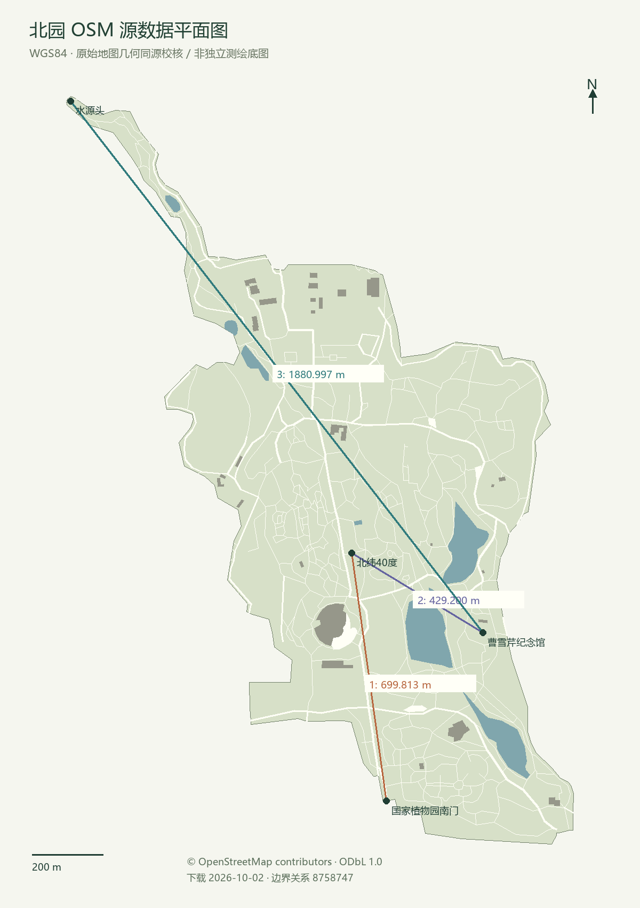
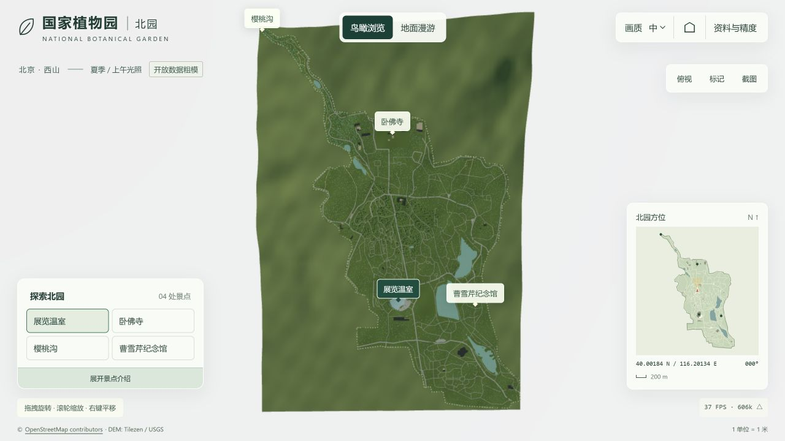
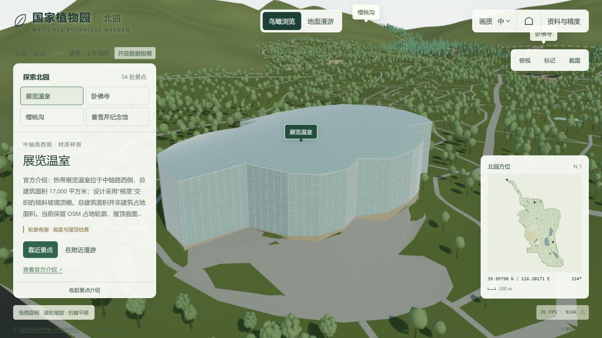
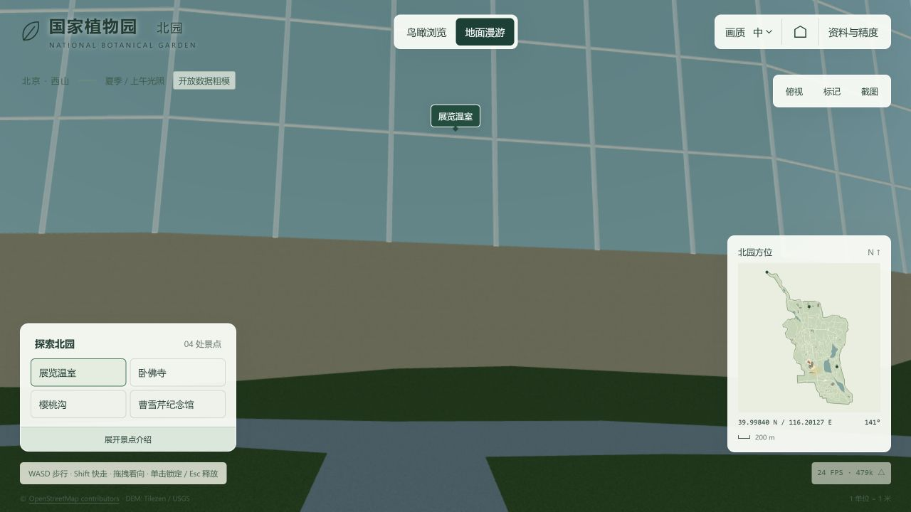
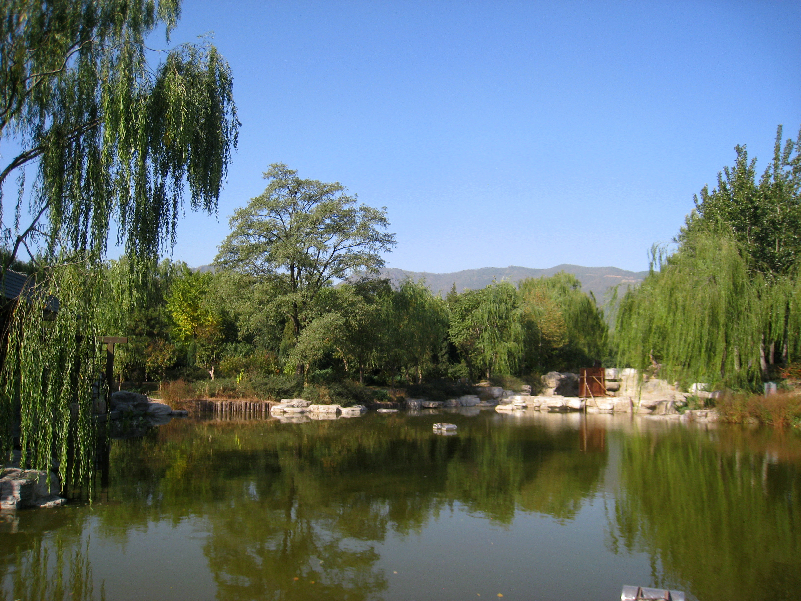
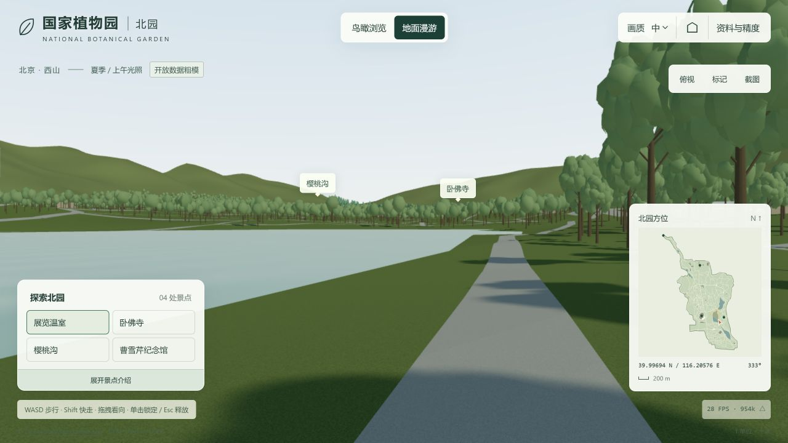
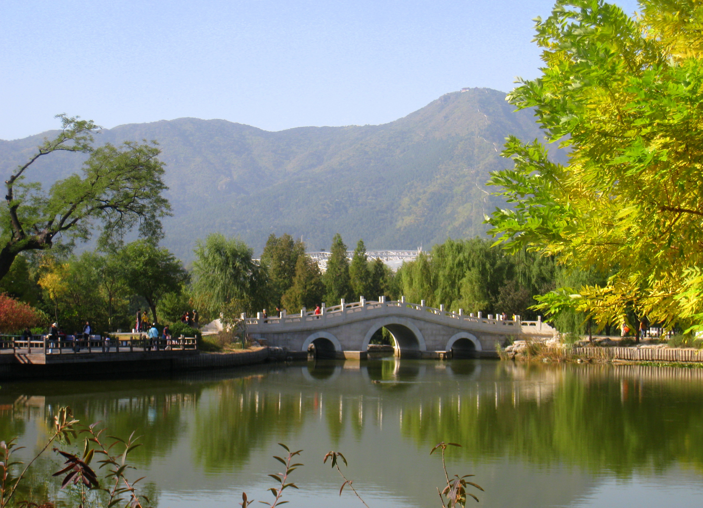

源数据、场景与实景参考
截图来自实际浏览器运行。本版本完成开放数据粗模与交互，尚未达到全园精准1∶1或照片级效果。源地图与场景使用相同OSM数据；这是导入校验，不是独立测绘验证。

01 / 俯视布局与坐标校核




官方导览图用于确认温室、卧佛寺、樱桃沟、纪念馆之间的相对关系及南北园区别；未经地理配准，也没有开放再分发许可，因此不嵌入或用作精确底图。
02 / 温室材质样板与地面漫游




03 / 湖岸实景参考与视觉差距
下面的历史实景照片没有可核实的相机外参或地理点位。模型机位取已绘湖岸附近、朝向湖面，仅为视觉对照。未声称匹配同一湖段、桥梁或机位；缺少相机位姿时，不能用照片推算毫米级尺寸。








尚待补充：
- 近年同季节、多角度且可复用的照片。
- 拍摄方位、相机位置、焦距和镜头标定。
- 岸线水位、桥梁测绘与树木普查。
- 温室外立面和屋顶的实际尺寸。
有这些资料后才能进行严谨的匹配机位与几何误差验证。